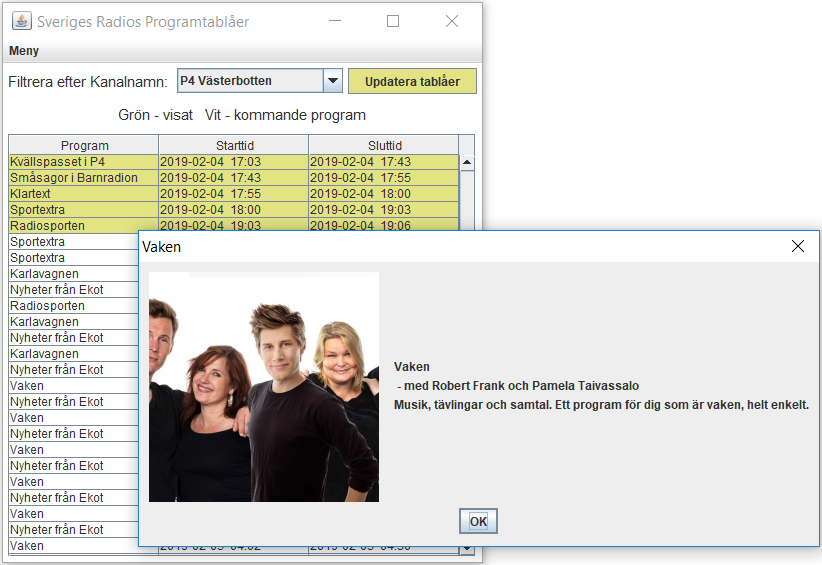

Tableaux for Sveriges Radio

An application created by me that gets and displays information about the tableaux of Sveriges Radio. The radio application is completely made up in Java.
The application uses the API of Sveriges Radio to provide the user with information about the tableaux. It displays information about all programs from all channels at Sveriges Radio. The information it displays is time for the program, headline, description and an eventual image. To use the application yourself you can download it in the link below.